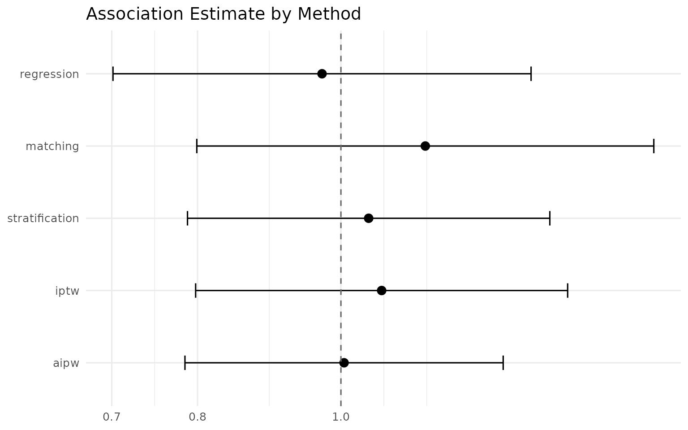
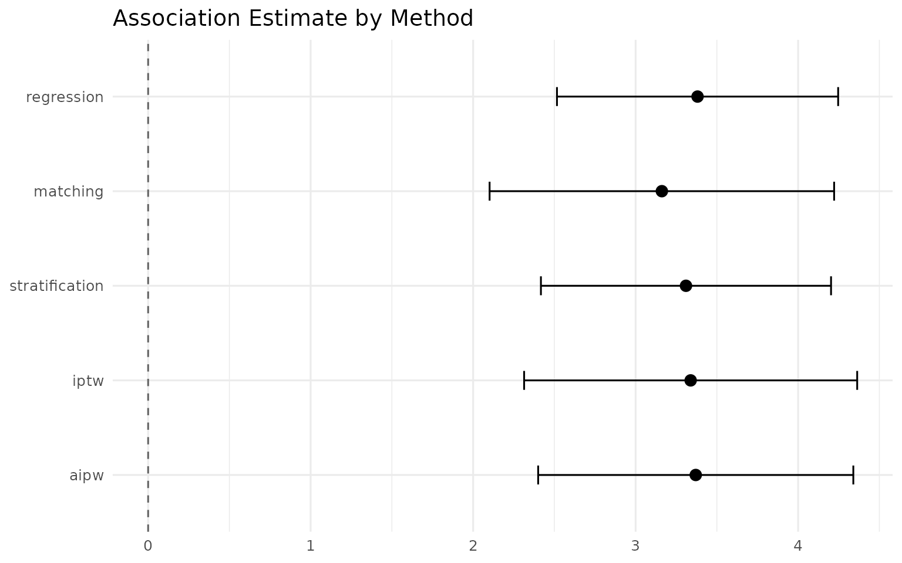
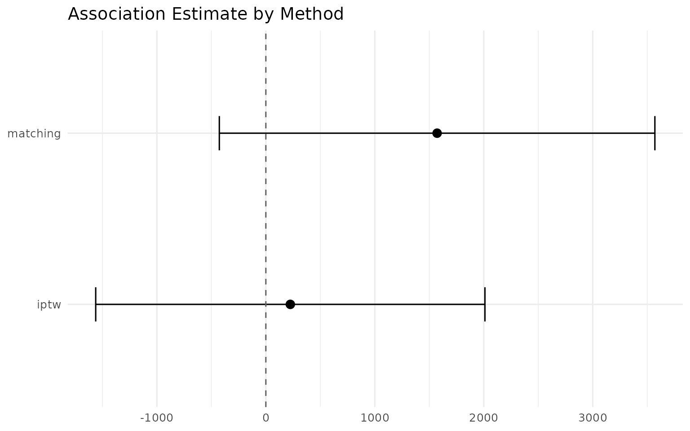

Benchmarking the Methods on Real Data
causal-benchmarks.RmdIntroduction
The simulated examples in the quick-start vignette prove the pipeline
runs; this vignette exercises the adjustment methods on real, messy
observational data with two well-known datasets. The NHEFS (NHANES
Epidemiologic Follow-up Study) data from the causaldata
package is the canonical textbook dataset for regression, matching,
stratification, IPTW, and AIPW (Hernán & Robins, Causal
Inference: What If): the scientific question is whether quitting
smoking is independently associated with an outcome after adjusting for
measured confounders. The NSW demonstration was a randomized
job-training program whose effect on 1978 earnings is known — the
Dehejia & Wahba (1999) experimental benchmark estimate of
$1,794 — and MatchIt::lalonde combines its
treated units with a nonexperimental comparison group, letting us check
the propensity score methods against a known experimental answer.
The five methods on NHEFS
nhefs_ok <- requireNamespace("causaldata", quietly = TRUE)
if (nhefs_ok) {
nhefs <- causaldata::nhefs
covs <- c("sex", "age", "race", "education", "smokeintensity",
"smokeyrs", "exercise", "active", "wt71")
nhefs_cc <- nhefs[!is.na(nhefs$wt82_71), ]
}
if (!nhefs_ok) {
message("The `causaldata` package is not installed; ",
"the analysis chunks below are skipped.")
}The binary exposure is qsmk (quit smoking, 1 = yes) and
the covariates are the standard set used in the textbook worked example:
age, sex, race, education, smoking intensity, smoking years, exercise,
activity, and baseline weight.
Binary outcome: death
library(IndepAssoc)
# We set a fixed random seed (1) before running the pipeline so the matching
# step is reproducible; see `?run_pipeline`.
set.seed(1)
result_death <- run_pipeline(
data = nhefs,
exposure = "qsmk",
covariates = covs,
outcome = "death",
type = "binary",
methods = c("regression", "matching", "stratification", "iptw", "aipw")
)
format_comparison(result_death$comparison)
#> Method OR 95% CI p-value n
#> 1 Regression 0.97 0.70–1.34 0.859 1629
#> 2 Matching 1.14 0.80–1.63 0.469 834
#> 3 Stratification 1.04 0.79–1.38 0.819 1629
#> 4 IPTW 1.07 0.80–1.42 0.668 1629
#> 5 AIPW 1.00 0.78–1.29 0.969 1629All five methods — outcome regression, matching, stratification, IPTW, and AIPW — return odds ratios close to 1, with confidence intervals that straddle 1 and p-values well above 0.05. The agreement across five functionally different adjustment strategies (those that model the outcome directly and those that model treatment assignment) is reassuring: the null finding is not an artifact of any single estimator. Had the estimates diverged sharply — say, matching far from regression — that would flag outcome-model misspecification or poor propensity-score overlap and warrant closer inspection of the propensity-score distribution.
plot_comparison(result_death$comparison, log_scale = TRUE)
This is a confounder-adjusted association under the standard no-unmeasured-confounding assumption, not a proven causal effect.
Continuous outcome: weight change (wt82_71)
Here nhefs_cc contains only the 1566 complete cases (the
63 rows with missing wt82_71 are excluded; the restriction
is stated here for transparency).
# We set a fixed random seed (1) before running the pipeline so the matching
# step is reproducible; see `?run_pipeline`.
set.seed(1)
result_wt <- run_pipeline(
data = nhefs_cc,
exposure = "qsmk",
covariates = covs,
outcome = "wt82_71",
type = "continuous",
methods = c("regression", "matching", "stratification", "iptw", "aipw")
)
format_comparison(result_wt$comparison)
#> Method Mean Diff 95% CI p-value n
#> 1 Regression 3.38 2.52–4.25 <0.001 1566
#> 2 Matching 3.16 2.10–4.22 <0.001 780
#> 3 Stratification 3.31 2.42–4.20 <0.001 1566
#> 4 IPTW 3.34 2.31–4.36 <0.001 1566
#> 5 AIPW 3.37 2.40–4.34 <0.001 1566Here estimate is the adjusted mean weight change in
kilograms associated with quitting smoking. All five methods agree on a
gain of roughly 3 to 3.5 kg, with narrow confidence intervals that
exclude 0. The convergence across methods is consistent with the
well-documented finding from this dataset that quitting smoking is
associated with weight gain.
plot_comparison(result_wt$comparison, log_scale = FALSE)
This is a confounder-adjusted association under the standard no-unmeasured-confounding assumption, not a proven causal effect.
The matching and weighting estimates against an experimental benchmark
lalonde_ok <- requireNamespace("MatchIt", quietly = TRUE)
if (lalonde_ok) {
lalonde <- MatchIt::lalonde
}
if (!lalonde_ok) {
message("The `MatchIt` package is not installed; ",
"the analysis chunks below are skipped.")
}Observational studies cannot be validated against an experimental
benchmark the way randomized trials can — but a few classic datasets let
us do exactly that. MatchIt::lalonde combines the 185
experimental treated units with a nonexperimental comparison group (the
Dehejia–Wahba sample). Applying observational methods to this hybrid
dataset and comparing their estimates to the known $1,794 benchmark is a
standard sanity check: methods that land near the benchmark are doing
the adjustment job well on real, messy data. Here we apply the two
propensity-score methods the benchmark is designed to validate —
matching (1:1 nearest-neighbor PSM with a 0.2 caliper and
within-pair estimation) and iptw (stabilized
inverse-probability weights) — to re78 (earnings in 1978,
continuous outcome), with the standard covariate set.
# We set a fixed random seed (1) before running the pipeline so the matching
# step is reproducible; see `?run_pipeline`.
set.seed(1)
result <- run_pipeline(
data = lalonde,
exposure = "treat",
covariates = c("age", "educ", "race", "married", "nodegree", "re74", "re75"),
outcome = "re78",
type = "continuous",
methods = c("matching", "iptw")
)
format_comparison(result$comparison)
#> Method Mean Diff 95% CI p-value n
#> 1 Matching 1571.74 -426.86–3570.35 0.122 226
#> 2 IPTW 224.68 -1561.40–2010.75 0.805 614Both estimates are the adjusted mean difference in 1978 earnings (dollars) associated with the NSW program. The experimental benchmark is $1,794.
plot_comparison(result$comparison, log_scale = FALSE)
The propensity-score matching estimate lands close to the experimental benchmark of $1,794, while the IPTW estimate deviates further — a pattern that mirrors the original Dehejia & Wahba finding that PSM recovers the experimental ATT much better than naive or heavily weighted estimators on this dataset. Divergence from the benchmark is itself informative, signaling sensitivity to the weighting specification or limited covariate overlap.
This is a confounder-adjusted association under the standard no-unmeasured-confounding assumption, not a proven causal effect.
References
- Hernán, M.A. and Robins, J.M. (2020). Causal Inference: What If. Chapman & Hall/CRC.
- Dehejia, R.H. and Wahba, S. (1999). Causal Effects in Nonexperimental Studies: Reevaluating the Evaluation of Training Programs. Journal of the American Statistical Association, 94(448), pp.1053-1062.
- Lalonde, R. (1986). Evaluating the Econometric Evaluations of Training Programs with Experimental Data. American Economic Review, 76(4), pp.604-620.
- The NHEFS data are distributed with the
causaldatapackage (Nick Huntington-Klein and Malcolm Barrett); seecitation("causaldata"). - The
lalondedata are distributed with theMatchItpackage (Ho, Imai, King and Stuart); seecitation("MatchIt").